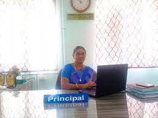

Principal's Desk
Dr.K. RAJAM
(M.E.,Ph.D.)
Dear all,
“Progress is impossible without change and those who cannot change their minds cannot change anything “ - George Bernard Shaw
It is my proud privilege to welcome all of you to this excellent institution Mohamed Sathak Hamid College of Arts & Science for Women. All of us know that women are a great human resource and the role of women in the society is crucial for the development of the family and the nation.
This college is well established on the Rameshwaram Highway to promote high quality education for women in Ramanathapuram district. Of course, we have a comfortable detached hostel to accommodate students from all over India. I am sure that by the Grace of the Almighty, all students who enter the portals of this college will be empowered, because while persuing their studies, importance will be given, not only to excel in their academics but also to improve their communication skills, quantitative reasoning and overall development.
We believe in providing our students, an environment rich in knowledge and varied opportunities to excel in various fields. All this is achievable mainly because of the highly qualified dynamic and dedicated faculty and committed non teaching staff of our college. This nurturing and caring environment will enable the students to experiment, discover and improve their various talents. All the knowledge and experience gained in our institution will help them throughout their life.
The college also provides space for students to hone their talents in extracurricular and co-curricular activities. The college developed research fervour through workshops, training’s, conferences and seminars.
ALL THE VERY BEST
With Best Wishes,
Leave a comment